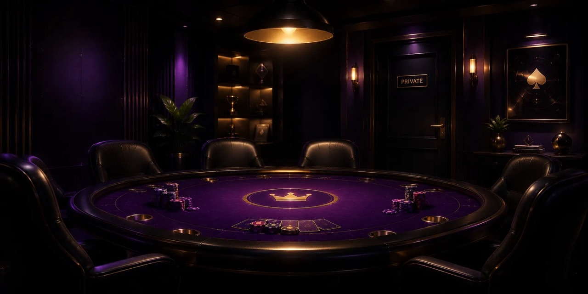
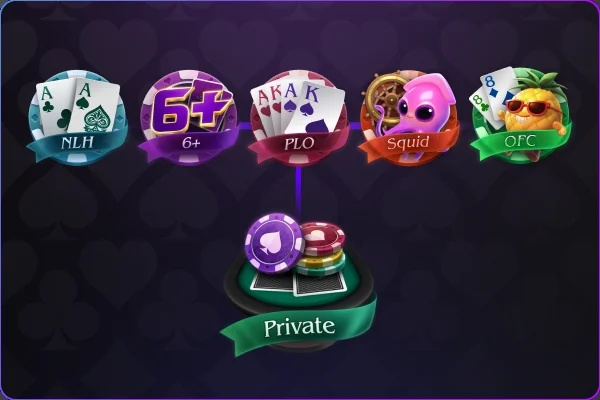
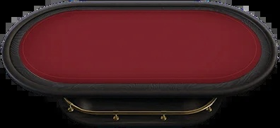
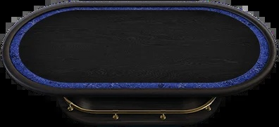
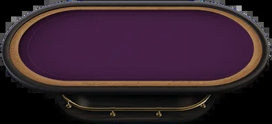
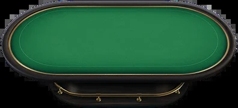
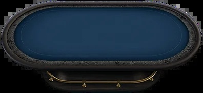
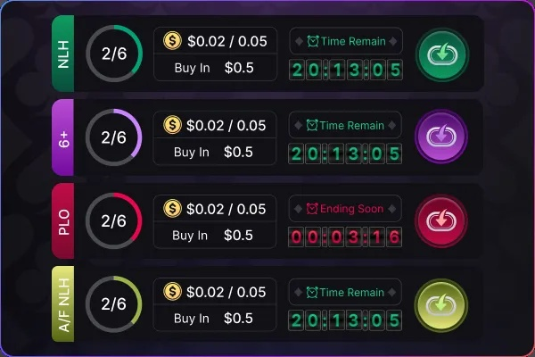
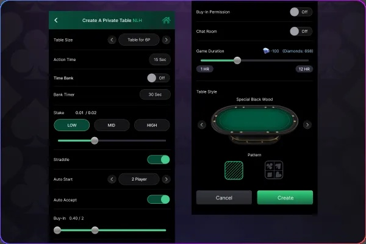
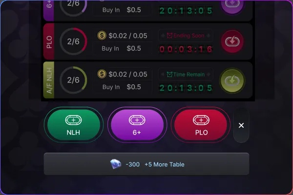

私人房間
自由建立專屬牌局
私人房間好友對局更自由
建立專屬私人房間，自由選擇玩法、盲注與房間密碼，快速邀請好友一起開局。
支援多種遊戲模式，打造專屬牌局體驗，無論娛樂對戰或競技切磋都能輕鬆進行。

功能介紹

1. 支援玩法：德撲 / 短牌 / 奧馬哈 / 魷魚 / 大菠蘿…等
2. 開房費用：可花費遊戲鑽石開桌
3. 房主可設定：盲注、密碼、玩法
4. 開房即計時，不可暫停
5. 可花費鑽石，購買額外最大開設桌數
開房前自由更換牌桌

建立私人房間前，房主可先自由選擇並更換想使用的牌桌。
確認牌桌後再開房，依照喜好打造專屬的遊戲空間。




每小時需消耗多少鑽石？
鑽石由房主支付，僅需一次性開啟；玩家進場不需額外付費
• 開房即計時: 從建立房間成功起即計算時間，不可暫停 / 暫停不減少費用
• 房間持續時間: 自動每小時計費，時間到了自動關閉，最多開到12小時
• 結束條件: 時間到自動關閉
關於房間計時機制

1. 房間一經建立，即刻開始計費與倒數
2. 房間內無人、無操作，也會繼續計算時間與消耗鑽石
3. 無法暫停、無法延遲
4. 自動關閉功能，到點即強制關房
房主可自訂哪些參數？

遊戲參數:
1. 遊戲模式（德撲 / 短牌 / 奧瑪哈）
2. 盲注等級 / 起始籌碼
3. 最大買入 / 最小買入
4. 局數上限（如限 50 局）
5. 強制 All-in 時間（選配）
語音/聊天:
是否開啟打字聊天
玩家設定:
每桌人數上限（4、6 人）
權限控制:
有邀請碼就可以加入牌桌或觀看(有時間限制)
計費方式:
每小時計費
牌桌空間與鑽石擴充規則

房主可根據需求逐步擴充空間，或於活動期間獲得免費擴充資格
• 初始牌桌空間: 預設可同時開設 5 張私人牌桌
• 擴充方式: 消耗額外鑽石，可解鎖更多桌位（扣150鑽+5張牌桌)
• 最大上限: 最多可同時開設20張私人牌桌（依平台而異）
• 同時在線上限: 每張桌最多 4或6 位玩家 + 觀戰位